The Price Tag
This capture shows the cost of obesity itself. I was astounded by the percentage of US Adults living with obesity (40%) and the cost associated with this medical condition ($445 billion).
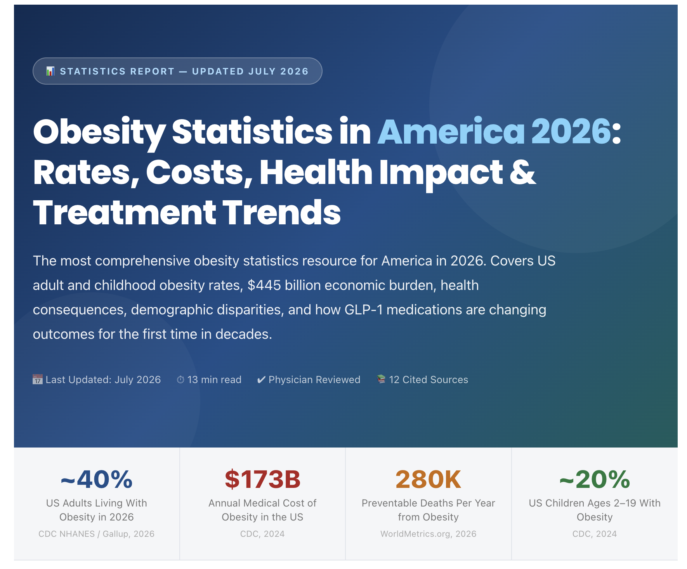
This capture, in my opinion, shows evidence of how the use of GLP-1s is leading to a paradigm shift. It may be too early to consider this a shift given that we only have a decline over a 4-year period.
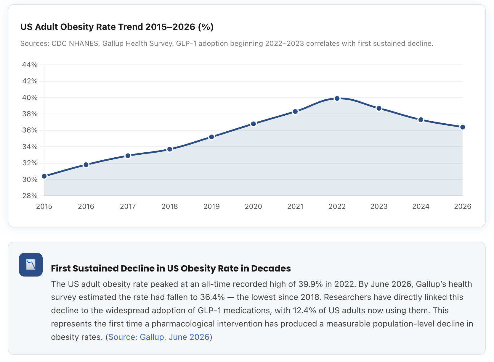
An annual savings of $580 million on jet fuel!!! What?!?!?! This is an anecdotal capture but one I found to be quite interesting especially the comment regarding the push to evaluate our food environment.
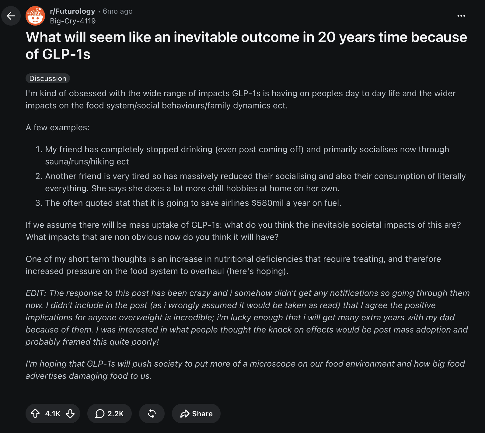
This Instagram post from Aspen Ideas Health captures a quote from Ali Furman, a Partner and U.S. Consumer Markets Industry Leader at PwC, comparing the disruption of GLP-1s to that of the smartphone. She argues new brands, products, and entire industries are forming around this drug, reinforcing the idea that this is as much an economic and cultural shift as a health one.
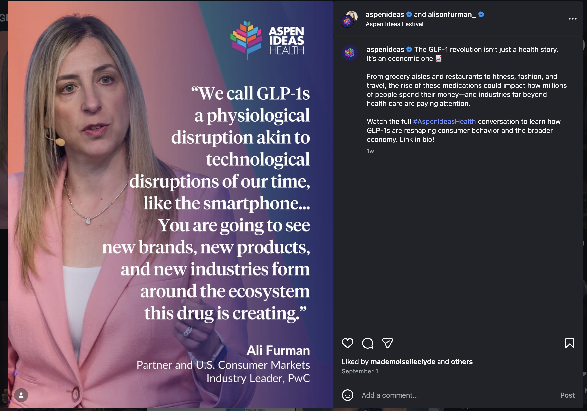
This WSJ podcast episode, "How Big Food Is Navigating the GLP-1 Era," highlights how food companies are being forced to rethink their entire strategy. For decades, the industry leaned into sugar, salt, and flavor to drive sales — but with GLP-1s and health-conscious shopping on the rise, that playbook is being challenged. It's a good example of how this isn't just a personal health story, but one that's reshaping entire industries from the top down.
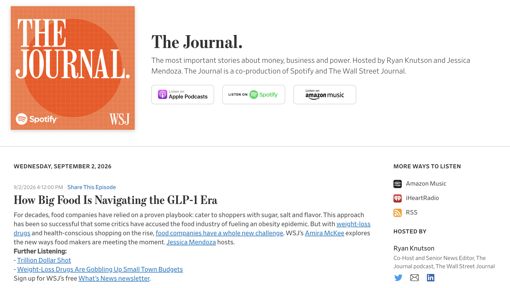
This Instagram post cites McKinsey data showing just how quickly grocery spending shifts once someone starts a GLP-1: within 6 months, purchases of chips, sweet bakery items, cookies, and soft drinks all dropped by 7-11%, while yogurt and fresh produce rose. What stands out to me is how granular this data is — it's not just "people eat less," it's a full-scale reordering of the grocery cart. This feels like strong evidence that GLP-1s are reshaping the food industry from the consumer side, not just the pharmaceutical side.
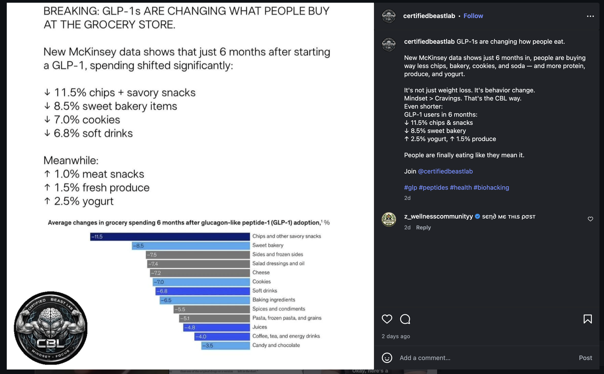
Marketing-Behavior Signal
This pop-up ad from Grüns directly targets GLP-1 users, a trend that I am beginning to see more and more. The discount is specifically framed around "I'm on a GLP-1 but I don't feel great." It's a striking example of how quickly companies are adapting their marketing to speak directly to this new consumer segment — treating GLP-1 side effects and nutrient gaps as a business opportunity rather than just a medical footnote.
Capital Follows Cravings
This Instagram post argues that GLP-1s are impacting spending on fast food, soda, alcohol, and oversized apparel all at once. The author's core claim is that this money doesn't disappear, but rather its reallocated toward wellness, and eventually toward a repricing of "safe" consumer investments like fast food and soda stocks. It's one of the more ambitious arguments I've found for just how far-reaching this shift could be.
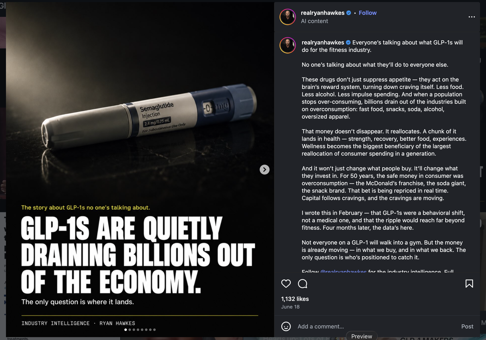
Up, up we go!
This Forbes Health chart shows Medicaid GLP-1 prescriptions climbing from under 1 billion in late 2018 to 8.4 billion by early 2024. That is an increase of roughly 8x in just five years. It's a striking reminder that this isn't just a story about individual choice or private insurance; taxpayer-funded healthcare is absorbing a massive and rapidly growing share of the cost.
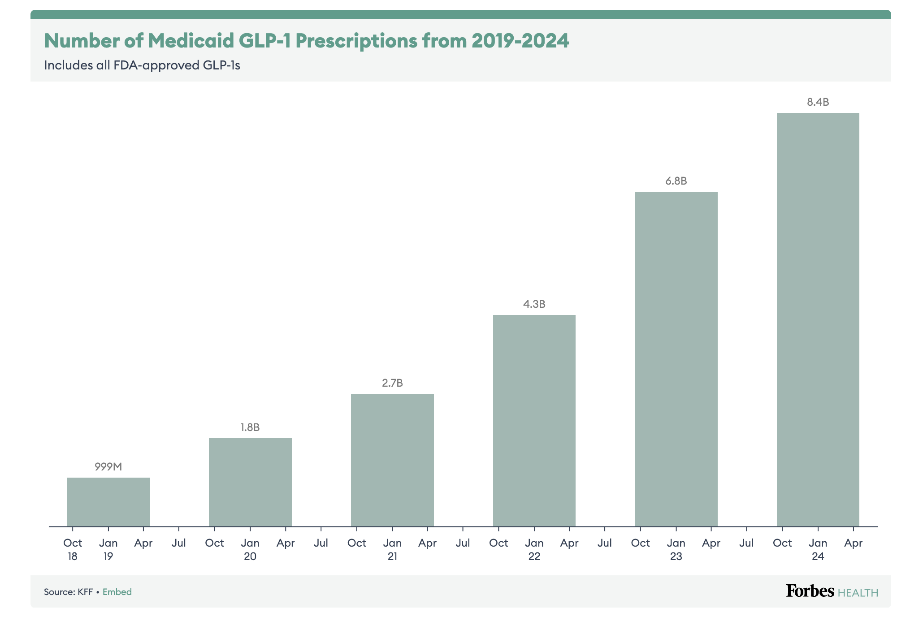
Shelves Are Shifting
This article adds to the growing pile of evidence that grocery retailers themselves are having to respond to this shift — not just food manufacturers. Households with at least 1 GLP-1 user are reducing their grocery spending by 5.3% within six months of adopting the medication. It reinforces a pattern I keep seeing across my research: this isn't a story confined to pharmacies or doctor's offices, it's reaching all the way down to what's stocked on the shelf in front of you.
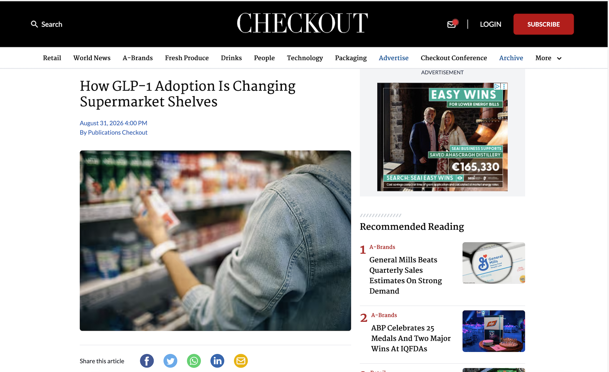
Changing your lifestyle with GLP-1s
This TODAY show clip features Heidi Skolnik promoting her book "Your GLP-1 Game Plan," aimed at helping people eat, move, and thrive while on weight-loss medication. It's a good example of an entirely new publishing and advice market forming around GLP-1 users. This is proof that this drug isn't just changing what people buy, it's creating brand-new careers, books, and content that didn't exist a few years ago.
Straight from the CEO
This episode of The Prof G Pod features Eli Lilly's CEO discussing how GLP-1s will reshape America. This is a rare instance of hearing directly from the company profiting most from this trend, rather than an outside analyst or commentator. It's worth watching critically, since the CEO obviously has a stake in framing these drugs as a "miracle," but it's also a useful window into how the industry itself is thinking about long-term impact.
The Data that Counts
This diagram from "How GLP-1 Drugs Could Reshape the Economy" breaks the question down into three drivers: access (how many people can get it), duration (how long they stay on it), and persistence (whether habits stick after stopping). I like this framework because it cuts through a lot of the hype and gets at the actual uncertainty of the impact behind the wide use of GLP-1s. We won't know the real economic effect until we have answers to all three, not just the first one.
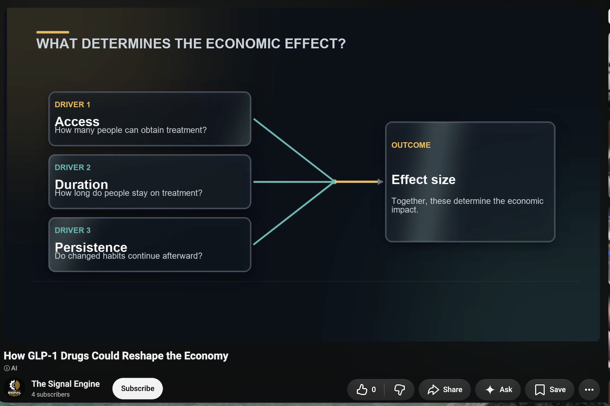
Rewriting the Rulebook
This FTI Consulting article, "GLP-1 Drugs Are Rewriting the Rules of Food and Beverage," comes from a major global consulting firm (not a health outlet or social media account) which tells me companies are now paying serious money for strategic advice on how to navigate this shift. When consulting firms start publishing formal insights on a topic, it's usually a sign that boardrooms are already treating it as an urgent, structural issue rather than a passing trend.
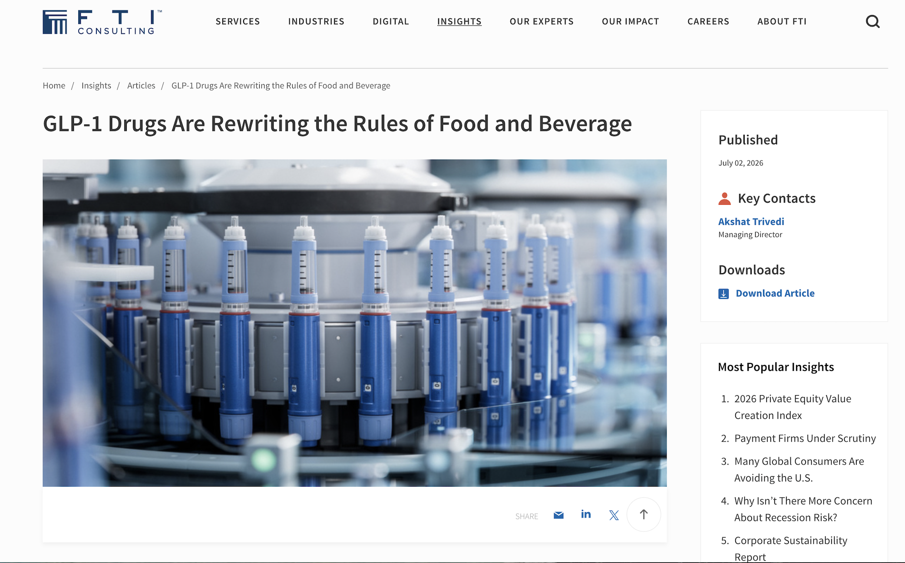
From Molecules to Milestones
This PwC survey, "Business Model Reinvention: GLP-1 Trends & Impact Survey," argues that GLP-1s are forcing companies to lead through disruption and reinvent themselves. Interestingly, PwC is the same firm Ali Furman (from my Aspen Ideas entry) works for, which suggests this isn't just one person's opinion rather it's becoming an institutional viewpoint across the consulting industry.
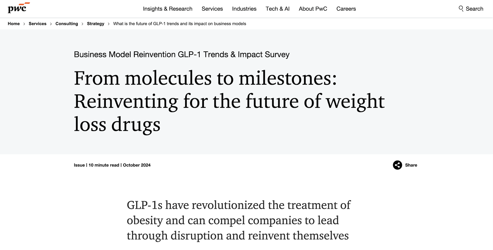
Marketing-Behavior Signal 2
This is a paid Instagram ad from Thrive Market, a grocery delivery company, titled "How to eat on GLP-1s in 2026." It's a clear sign that grocery brands aren't just reacting to changed spending habits, they're now actively running ad campaigns to court GLP-1 users specifically, treating them as a distinct and valuable customer segment worth targeting directly.
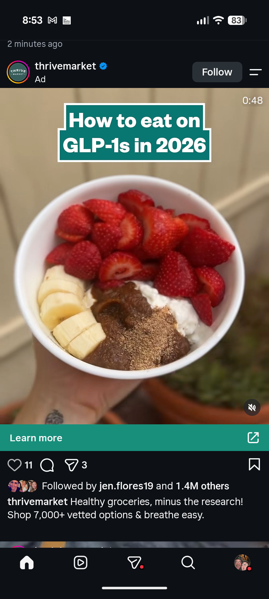
The End of the Second Martini
This New York Times newsletter surveyed a dozen chefs and restaurant owners about how dining habits are changing, including the rise of the 5 p.m. reservation and the decline of the second cocktail. It's a good reminder that this shift isn't limited to grocery stores — it's reaching into restaurants and hospitality too, changing not just what people eat, but how and when they socialize around food and drink.
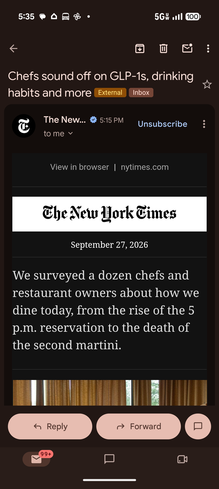